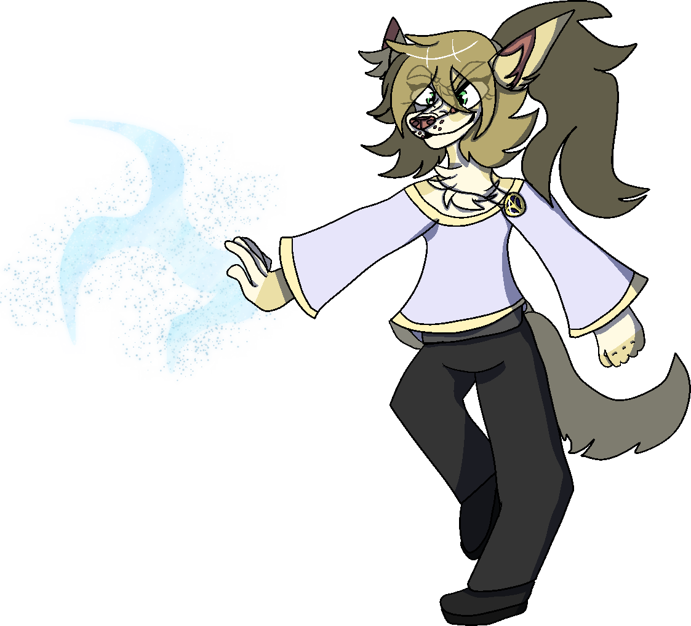

Helena "Leena" Ayers
she/he/they | borzoi | ice elemental

art by me (waywardelegy)
FULL NAME // Helena Ayers
PRONOUNCIATION // Hell-en-uh "Lee-nuh" Eye-ers NICKNAME // Leena AGE // 21 PRONOUNS // She/He/They SPECIES // Canine (borzoi) AFFILIATION // Main Party ABILITIES // Close- and far-range weaponry, Ice Elemental magic, leadership skills ALLIES // Luca, Alton, Aera, Darius, Alena, Odin ADVERSARIES // Darius (formerly), Xenia, The GuardianA secluded young royal. She meets- and quickly befriends- Aera while outside of the castle grounds.
She's generally very quiet when first met, and is shy due to her upbringing. However, as soon as she feels safe around you, she will not hold herself back from getting overexcited.
Leena was born to the Royal Family; raised as an only child. She always believed, however, that there was something more to her life- Like someone missing.
Upon a grave tragedy, she discovers that she might be right, and that her suspicions about Luca aren't all they hide...
Spotify Playlist goes here
"insert Aera quote here once scripting is done..."